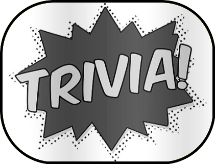

Trivia with George & Kaeli

Join us at the third Originally-Biannual-But-Now-Just-Occasional Trivia Party
The next trivia party is scheduled on George's birthday weekend, 2023!
Saturday, Feb. 18th, 6PM - 10PM
3335 19th St. Boulder
To RSVP, please text George or Kaeli!
See questions from past trivia nights!
Information
What will be there: As usual, we will have food, drinks, dogs, zesty trivia, and fearsome competition.
What to bring: This trivia party will be a gift exchange! Every player must bring a gift to put in the pot. More on how that works below.
Participants can form teams of up to six people. However, if you have previously been on a winning team, your team can only have up to four people.
Gift Exchange
- Every player brings a gift to the party to put into the pot.
- At the end of the night, teams will collect gifts from the pot in order of how they placed in the trivia game—the first place team gets first picks from the prize pot.
- There will be special gifts put into the pot by the hosts.
- Players should bring prizes that are valued at about $10 or more.
Extra Points and Contributions
- Every round, a team can earn a 1/2 point by all taking a 1oz shot of liquor. We will have a variety of liquors available!
- Please don't bring any food for the party, we will have that covered. Venmo or cash tips to help cover the cost of food and drinks is always appreciated :)